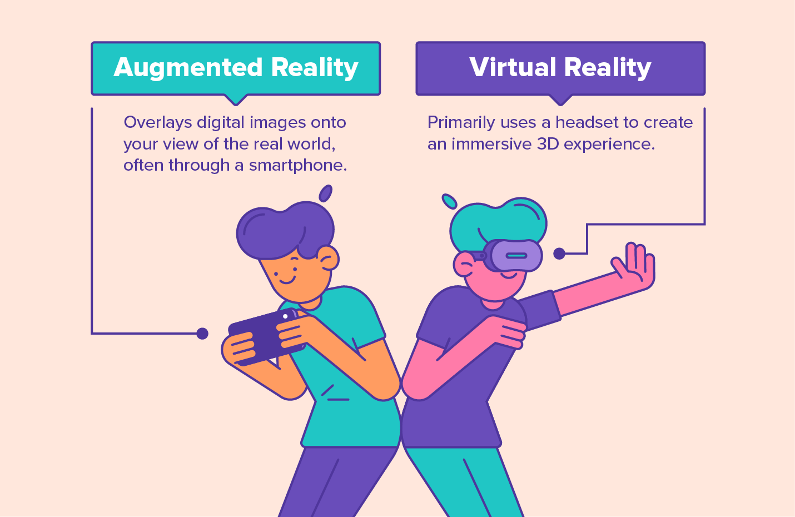

Are Businesses Still Going for Android App Development? You Bet!
While picking a mobile application for building their business various entrepreneurs favor Android-based applications. Why so? Android devices dominate about 85% of the world’s mobile market. Android applications help businesses to reach a larger target market as well as effectively improve the brand value.
Android based platform is not only known for its scalability, popularity and easy access on Google Play Store. Its prowess goes beyond the mere application variety. It allows integrating state-of-the-art innovations with Android mobile applications and devices to make the advancement interaction quicker and more powerful. This load of highlights on Android applications is the right decision for some organizations.
Android Instant Apps
Android based Instant applications are one of the most efficient innovations that allows the customers to install applications on their devices without its explicit installation. It saves clients’ time and allows them to use the application a lot quicker as compared to iOS and web-based applications.
Besides, Android applications don’t take up a lot of space on your devices, thus allowing the framework to work efficiently even when the memory is full.
The innovation makes it a lot simpler for organizations to publicize their apps and draw in expected clients. Today, the clients don’t have to go to the Google Play Store looking for an application, they can simply type in the query on Google and the search engine will show the best-suited application based on the keywords entered by the users. However, to install the application, your browser will redirect you to the Google Play store.
Artificial intelligence and Machine Learning
Artificial intelligence and Machine Learning innovations are generally used for streamlining the performance of your Android OS. They support such advanced operating systems as voice collaborators and chatbots, preparing [Big Data](https://en.wikipedia.org/wiki/Big_data), computerization, and various others.
Execution of AI and ML in Android applications assists organizations with upgrading their clients’ experience. For instance, they can:
- Computerize routine errands, for example, characterizing tickets by point, sending messages and updates;
- Further develop client suggestions, framing them dependent on client requirements ;
- Better filter options for e-commerce businesses;
- Allows you to customize a mobile app based on customer preferences. With AI and ML, you get a better understanding and a deeper connection with the users.

IoT
The two mobile application advancement patterns in 2021 are [5G](https://en.wikipedia.org/wiki/5G) and [Internet of Things](https://en.wikipedia.org/wiki/Internet_of_things) innovations. 5G is required to give an emotional ascent to IoT, advancing its spread from Smart Houses to Smart Cities.
Other than the splendid possibilities, later on, various organizations are now receiving generous rewards from installing IoT innovation in their mobile applications. Presently IoT operating systems are used in:
- Smartwatches enabled by
GPS, accelerometer, and gyrator gadgetsfor better developments, area, and exercises following; Smart Homes sensorsto mounted light, temperature, security status, and conceivable water or gas spillage;Smart Home contraptionsto associate a microwave, an ice chest, a lighting framework, and others into one organization which can be overseen in a mobile application physically or with the assistance of voice colleagues;- Modern IoT for following creation stream and preventive upkeep, when all the details, situations with, investigation can be checked basically in one mobile application;
- Transportation and coordination when every item course can be followed in an application by checking a standardized identification on the name. One such example is
CoPilot Truckthat makes navigation easy for truck drivers complete with tracking technology and maintenance alerts that makes it easier for trucking companies to offset their losses via timely intervention.

AR and VR Technology
Augmented Reality and Virtual Reality aren’t innovations in Android improvement. For instance, the Google platform [ARCore](https://en.wikipedia.org/wiki/ARCore) has been permitting building increased reality encounters for the Android platform since March 2018.

While executing AR/VR advancements in their mobile applications, organizations take their client encounters to another level. For instance, IKEA dispatched its [Place](https://www.ikea.com/au/en/customer-service/mobile-apps/say-hej-to-ikea-place-pub1f8af050) application that empowers purchasers to check whether the furniture they might want to purchase fits in their homes. Google Maps has an AR update that assists with better exploring around a city by setting a virtual guide over genuine road sees.
In 2021, there will be more organizations that will try different things with VR/AR innovations and effectively execute them in their applications. They will turn out to be more spread around different specialties and businesses like training, the travel industry and travel, land, amusement, E-trade, and retail.
On-demand Apps
On-demand applications were exceptionally famous in the Corona-infection age in 2020 and will keep on being used much of the time in the future. These are the applications that offer speedy types of assistance like Uber or pizza conveyance administration.
On-demand applications are used in different specialties like retail, food conveyance, health tech, staple, and various others. They assisted various organizations with keeping their client stream high during the lockdowns and some of them even expanded their incomes by arriving at each client.
These applications will hold their fame in 2021 as they assist their clients with performing errands quickly and helpfully.
M-Commerce
Business Insider predicts that M-Commerce volume will ascend from 25.5% in 2019 to 44% by 2024. M-Commerce, otherwise called mobile trade, includes any financial exchanges clients can do by using their cell phones. They include:
- Mobile cash moving;
- Electronic tickets, E-tickets, E-coupons, electronic dedication cards;
- Internet business;
- Mobile banking;
- Contactless installments and installments in mobile applications, and others.
The M-Commerce applications make installment methods fast and helpful, along these lines various organizations remember mobile installments for their applications. Most importantly, they can be effectively underlying any mobile application as Google gave its installment platform Google Pay application for Android application designers, making M-Commerce benefits significantly safer and simple-to-use. Some of the top examples are e-commerce giants like Amazon and Flipkart that have modeled their e-commerce to fit the portability of m-commerce. Meesho is yet another Indian retail app that works wonders as an m-commerce app.
Multiplatform Development (Flutter)
Multiplatform improvement with Flutter innovation from Google is the eventual fate of native applications. With this structure, mobile designers can construct a native application that fits both Android and iOS platforms without forfeiting their native application usefulness.
Various designers have effectively tried and delighted in Flutter when building mobile applications as it’s profoundly adaptable and gives an assortment of improvement operating systems. Using Flutter, they can foster native applications a lot quicker and give a base reasonable item to the market inside a brief time frame.
There are as of now various applications created with Flutters like Alibaba,Google Ads, Reflect, and various others. The innovation is required to be the most sizzling mobile advancement pattern in 2021.
Kotlin MultiPlatform
Kotlin is a statically composed programming language that can be used as a choice to Flutter for building multi-platform applications. various mobile engineers incline toward Kotlin as it’s:
Expressiveandsuccinct;- Impeccably consolidates with Java and JavaScript;
- Suits for offbeat programming which makes normal mobile application assignments a lot
quicker; - Allows building
protected and stablecode; - Runs on
Linux,Windows,Mac,Java virtual machine (JVM); - Allows using a solitary codebase for iOS and Android business rationale.
Kotlin is required to be profoundly famous in 2021 as it speeds up advancement strategies and saves mobile engineers a lot of time.
Is Android Mobile App Development Worth?
Mobile application development not just aids you in acquiring the benefit factors yet additionally makes your life and work simpler. In any case, if you are fostering a mobile application for bringing in cash you need to know all the rules and guidelines. Take as much time as is needed to consider the application or administrations and afterward move to the improvement cycle.
Conclusion:
There are various routes through which Android applications can maximize your productivity. You can configure, make and foster your thoughts through Android applications to acquire great ROI on your ventures.
Android mobile application development has a great deal to bring to the table to programming engineers and organizations that need to construct their mobile applications in 2021.
By choosing android applications, companies can essentially develop client mobile experience and increase their brand value.